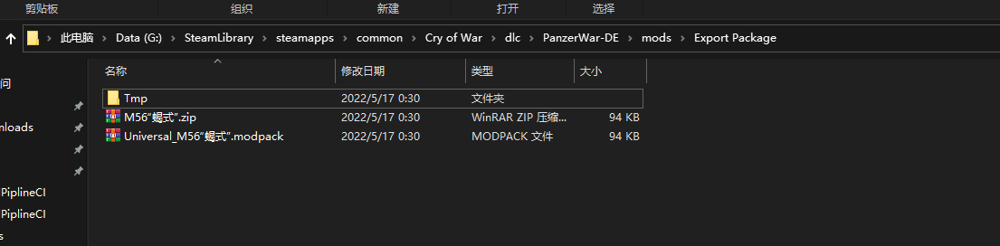
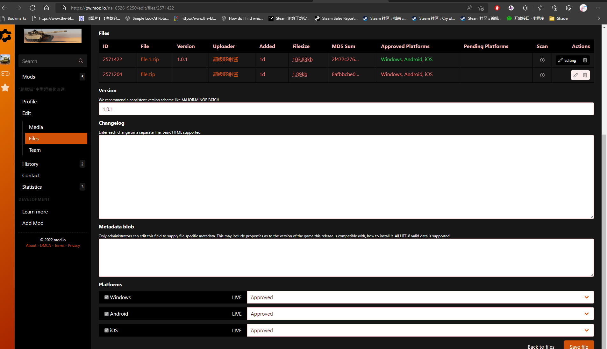

19. DIY-> MOD 工坊内容转模组
我希望所有的人都能够去创造 Mod，创造 Mod 并不是只有有电脑与技术人的人才能制作的。所以工坊增加了发布 Modpack 的功能，分享的 Modpack 与 分享码不同，是只读的，不可被工坊编辑。
1. Create Content - 创建内容
在工坊点击发布后，会生成对应的 zip 与 modpack 文件。
位于路径
（电脑） SteamLibrary\steamapps\common\Cry of War\dlc\PanzerWar-DE\mods\Export Package
（手机）Android\data\com.ShanghaiWindy.PanzerWarDEM\files\mods\Export Package
When clicking share button in the workshop,the game will generate zip and modpack file.
The file is located at
（PC）SteamLibrary\steamapps\common\Cry of War\dlc\PanzerWar-DE\mods\Export Package
（Mobile）Android\data\com.ShanghaiWindy.PanzerWarDEM\files\mods\Export Package

2. Sharing - 分享
Modpack
modpack 文件 可分享到各种社区，QQ群，网盘
modpack can be shared to community and google cloud.
Mod.io
zip 文件可用于上传至 https://pw.mod.io/add
modpack 文件可当正常模组进行安装
zip file can be uploaded to https://pw.mod.io/add
modpack can be installed as normal mod
3. Mod.io Upload - Mod.io 上传
upload zip file and click all platforms as approved
上传 zip 文件，平台全部勾选 approved
国内访问 mod.io 需要翻墙
